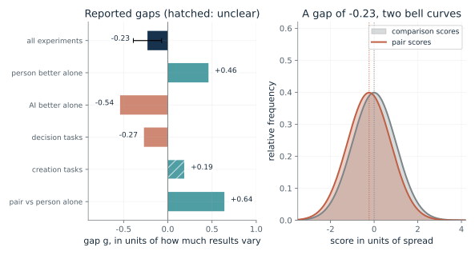
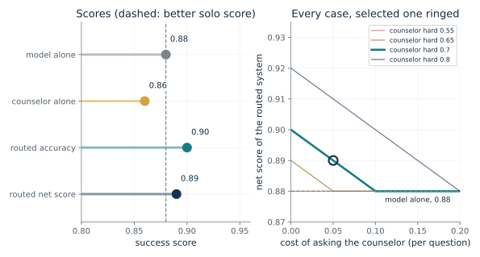
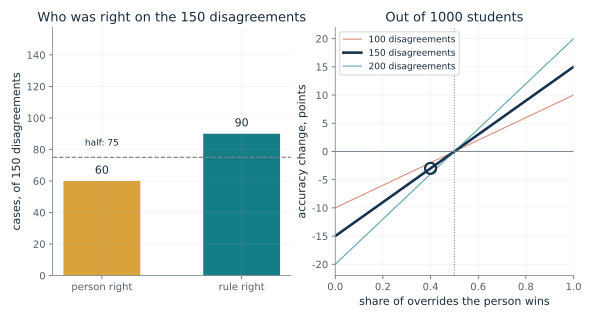
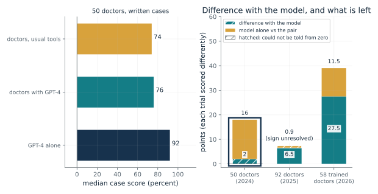
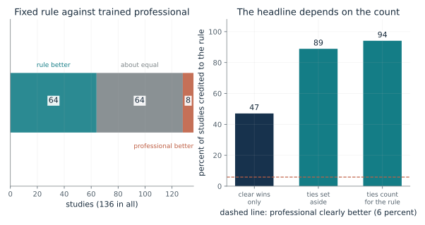
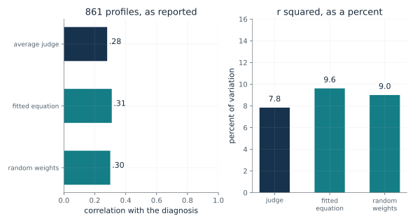

Did pairs beat their better member on average?
From Chapter 25, On average pairs trailed their better member by 0.23, except when the person led
Across 106 experiments, how did a person and an AI together compare with the better of the two alone, and with the person alone?
Each experiment put people alone, an AI alone and the two together on the same task. The review put every gap on one scale, called g, so different tasks can be set side by side. The normal-curve picture shows what a gap of that size means: even a clear average gap leaves much overlap between the two sets of scores.
Predict first: Before choosing bars, predict the sign of the gap when the AI alone was the better member.

Which gap: all
What happens: When the AI alone was better, the pair lost by 0.54. When the person alone was better, the pair gained by 0.46. The overall minus 0.23 hides that split, and the authors offer a hypothesis, not a test, for why people who beat the AI gain.
All experiments, pair against the better member alone: g = -0.23. If both sets of scores were bell-shaped with equal spread, a random pair score would beat a random comparison score about 44 percent of the time; this reading is the companion's, not the review's.
- Gap g
- -0.23
- Direction
- small, behind
- Interval printed in the chapter
- -0.39 to -0.07
- Pair beats comparison, normal reading
- 0.435
A pair can improve on the person and still do worse than the machine. The yardstick has to be the better solo score, and the answer depends on the task and on who leads.
The person in these experiments is a human participant making a decision or creating content. The review says nothing about how a mind does either.
The AI is whatever system each experiment used. The review pools many tasks, so its averages describe the studies collected, not any one system.
Show the calculation
Chance of beating = Phi(g / sqrt 2) = Phi(-0.23 / 1.414) = 0.435. The review's 95 percent interval is given for the all-experiments gap only: -0.39 to -0.07.
The equations and symbols
- g
- the gap in units of how much results vary; zero is no gap, plus means the pair came out ahead
- Phi
- the normal cumulative curve (used only for the companion's reading)
- comparison
- the better of person alone and AI alone, or the person alone, as stated for each bar
The review covers the studies the authors collected, mostly decision tasks, published from 2020 to June 2023, when chat models were rare in trials. In over 95 percent of its systems the person made the final decision after advice. The bell-curve reading assumes equal spread and normal shape, which the review does not claim.
Check your understanding: The pair gained 0.64 against the person alone yet lost 0.23 against the better member. How can both be true?
Book source: Chapter 25, On average pairs trailed their better member by 0.23, except when the person led. Illustration C25-D01. Reported result. Reported values quoted in the chapter from Vaccaro, Almaatouq and Malone (2024), a review of 106 experiments: g of minus 0.23 for the pair against the better member (95 percent interval minus 0.39 to minus 0.07), plus 0.46 when the person was better alone, minus 0.54 when the AI was, minus 0.27 for decision tasks, plus 0.19 for creation tasks (not clearly above zero on its own), plus 0.64 against the person alone. The bell-curve picture and the probability it gives are this companion's own reading. No simulation.
When should a case go to the person?
From Chapter 25, Two hand-off methods were tested only with stand-ins for people
A model is right 0.95 of the time on clear cases and 0.60 on hard ones. A counselor is right 0.90 and 0.70, and asking costs 0.05. Which cases should go to the counselor, and does the system beat the better solo score?
For each case type compare the person's chance of being right, less the cost of asking, with the machine's chance. If the person wins, route those cases to the person. The system's accuracy is the share-weighted success of whoever answers, and its net score takes off the asking charge.
Predict first: Predict how high the asking cost can get before the hard cases stop going to the counselor, when the counselor is right 0.70 of the time on them.

Cost of asking, per question: 0.05 · Counselor's success on hard cases: 0.7
What happens: Clear cases stay with the model (0.90 minus 0.05 is 0.85, short of 0.95). Hard cases go to the counselor (0.65 beats 0.60). Accuracy rises from 0.88 to 0.90, net score is 0.89, and the counselor alone scores 0.86, so the routed system beats the better solo score, 0.88.
With an asking cost of 0.05 and the counselor right on hard cases 0.7 of the time, the system sends hard cases to the counselor. Accuracy is 0.9, net score 0.89, against a better solo score of 0.88.
- Sent to the counselor
- hard cases
- Routed accuracy
- 0.9
- Net score after asking charge
- 0.89
- Beats the better solo score?
- yes, better solo is 0.88
A routing design needs the case types and each partner's success rates before the answer is known. The gain is real in the example and disappears when any of those inputs is wrong.
The counselor stands for a person with judgment on hard cases. Nothing here measures any person.
The model is a specification: its success rates are stated inputs, not outputs of a real system.
Show the calculation
Model alone: 0.8 x 0.95 + 0.2 x 0.60 = 0.88. Counselor alone: 0.8 x 0.90 + 0.2 x 0.7 = 0.86. Rule h - c > q: clear 0.85 vs 0.95; hard 0.65 vs 0.60. Net = accuracy - 0.05 x share routed (0.2).
The equations and symbols
- x
- the case (here its type, clear or hard)
- h(x)
- the person's expected success on that case
- q(x)
- the machine's expected success on that case
- c
- the cost of consulting the person, on the same scale
Case types are recognized in advance, both success rates are known for each type, and the cost is on the same scale as success. All three must be estimated under the conditions of use; mistakes in any of them can erase the gain. A tie keeps the case with the machine.
Check your understanding: Raise the cost to 0.10 with the counselor at 0.70 on hard cases. What happens to the hard cases and to the net score?
Book source: Chapter 25, Two hand-off methods were tested only with stand-ins for people. Illustration C25-D02. Formula. Book formula and constructed example. The cost-of-asking form of the rule is the book's statement, not the papers'. All numbers are made up for illustration (four clear cases in five; model 0.95 and 0.60; counselor 0.90 and 0.70; cost 0.05). The other costs and hard-case accuracies are this companion's variations. Neither hand-off paper put a person in the loop.
How often must a person win an override for it to pay?
From Chapter 25, Overrides likely lose, and showing the AI first nudged agreement up
A counselor and a rule disagree on 150 of 1,000 students. The counselor is right on 60 of them. If the counselor overrides every disagreement, what happens to accuracy?
On agreements the person and the rule score the same, so the overall change comes from the disagreements alone. If the person overrides all of them, each win gains one case and each loss costs one. The net is wins minus losses, divided by the number of students.
Predict first: Predict the change in accuracy, in points, if the person wins only 40 percent of 150 disagreements out of 1,000 students.

Disagreements out of 1,000 students: 150 · Share of overrides the person wins: 0.4
What happens: The counselor is right on 60 of the 150 and the rule on 90, so the overrides lose 30 cases, three points of accuracy out of 1,000. At 50 percent they break even, and every disagreement won beyond half adds to accuracy.
The person overrides all 150 disagreements and is right on 60 (40 percent), so overrides cost accuracy: -30 cases, -3.0 points of accuracy.
- Overrides won
- 60 of 150
- Net cases
- -30
- Accuracy change
- -3.0 points
- Verdict
- overrides cost accuracy
Only disagreement cases can change the score, so the win rate on those cases is the whole question. Software could log each override and its outcome and show the person their own record.
The person is a counselor, clinician or other judge. Dawes, Faust and Meehl reported that the limited research on overrides showed more accuracy when clinicians relied on the rule.
The rule is a fixed formula that weighs the cues the same way every time.
Show the calculation
Net cases = 60 - 90 = -30. Accuracy change = -30 / 1000 = -0.030. An override pays only if the win share is above 1/2.
The equations and symbols
- P
- a probability
- |
- 'given': the chance the person is right, given that the two disagree
- 1/2
- the break-even share when each kind of error costs the same
A yes or no forecast with equal costs for each kind of error, at least one disagreement, and a person who overrides every disagreement. Where person and rule agree, their scores match. An override that sets the formula aside for a rare, checkable fact it cannot see, like Meehl's broken leg, is a different and easier case.
Check your understanding: With 200 disagreements and a 60 percent win share among 1,000 students, what is the change in accuracy?
Book source: Chapter 25, Overrides likely lose, and showing the AI first nudged agreement up. Illustration C25-D03. Formula. Book formula and constructed example (1,000 students, 150 disagreements, the counselor right on 60 and the rule on 90). The other disagreement counts and win shares are this companion's variations. The chapter notes that Grove and Meehl inferred, and Dawes, Faust and Meehl reported directly, that overrides tended to lose; no data are used here.
Did doctors with a chat model beat the chat model alone?
From Chapter 25, Doctors with a chat model scored at or below the chat model alone
Four trials gave doctors, or the public, a chat model and also scored the model alone. How big was the gain from the model, and how far did the people using it fall short of the model alone?
Each trial has an arm with the model and an arm without, and an arm where the model worked alone. The gain is the first difference and the gap is the second. Putting them in one stack shows how much of the distance to the model's score the people closed. Hatched pieces are differences that could not be told from zero.
Predict first: Before switching trials, predict whether the doctors using the model reached the model's own score in any of the three doctor trials.

Which trial: goh24
What happens: In the trained-doctor trial the model added 27.5 points, yet the model alone still scored 11.5 points above the doctors working with it. The pair beat the model's median in 31.4 percent of cases.
50 doctors, written cases: doctors using the model scored 2 points higher at the median, a difference the paper could not tell from chance; GPT-4 alone sat about 16 points above them, a reading of the medians, not a tested result. The trials are scored differently and cannot be pooled.
- Gain from the model (points)
- 2 (could not be told from chance)
- Model alone above the pair (points)
- about 16
- How that gap was obtained
- a reading of medians, not tested
A pair can improve on the person and still do worse than the machine. This is the strongest reason the chapter asks for a test of the whole arrangement against each partner alone.
The people are doctors or members of the public, so the results are about how people use a chat model, not about neurons.
In three of the four trials the chat model alone scored above the people using it; in the 92-doctor trial the two were about a point apart. The chapter links this to the review's split by who was better alone.
Show the calculation
GPT-4 alone: three model-only runs. The paper did not test the pair against the model alone. The 16 here is 92 minus 76, the chapter's reading of the medians.
The equations and symbols
- gain
- points the model added for the people using it, as reported (in the 50-doctor trial the difference could not be told from chance)
- gap
- points by which the model alone scored above the people using it (in the 92-doctor trial the paper prints the sign both ways, so no direction is claimed)
The trials score different things, so the points are not comparable across them. The opening trial did not test the pair directly against the model alone, and the model-alone arms were exploratory in some trials. The public trial's models received the whole scenario while participants had to convey the details. Written cases, not patients. Nothing here is a clinical claim.
Check your understanding: In the 50-doctor trial, why is the 16-point gap not a tested result?
Book source: Chapter 25, Doctors with a chat model scored at or below the chat model alone. Illustration C25-D04. Reported result. Reported values quoted in the chapter and its source notes: Goh and colleagues 2024 (50 doctors: medians 74, 76 and 92), Goh and colleagues 2025 (92 doctors: plus 6.5; about one point from GPT-4 alone, with the sign printed both ways in the paper), Qazi and colleagues 2026 (58 trained doctors: 71.4 against 42.6, adjusted 27.5; model alone 11.5 above the pair), Bean and colleagues 2026 (1,298 members of the public: 94.9 against under 34.5). The model-alone score of 82.9 is derived by this companion from two reported numbers. No simulation.
How often did a fixed rule match or beat the professional?
From Chapter 25, A fixed rule often matched or beat the professional it replaced
In 136 studies that set a fixed rule against a trained professional, the rule did clearly better in 64, about equal in 64, and worse in 8. What does that say, and how does the headline change with how ties are counted?
The chapter's three counts partition 136 studies. Crediting the rule only for clear wins gives 64 of 136. Setting ties aside gives 64 of the 72 studies with a winner. Letting ties count for the rule gives 128 of 136.
Predict first: Predict the share of studies in which the rule did at least as well as the professional.

How to count ties: clear wins only
What happens: Counting ties for the rule, it matched or beat the professional in 128 of 136 studies, 94 percent. Counting only clear wins it is 47 percent. The professional clearly won only 8 times, about 6 percent, however ties are counted.
Of 136 studies, the rule did clearly better in 64, about equal in 64 and worse in 8. Counting clear wins only, the rule is credited in 47 percent. A count of studies cannot say why the rules won.
- Studies
- 136
- Credited to the rule
- 47 percent
- Professional clearly better
- 8 of 136
- Counting rule
- clear wins only
A count of studies cannot say why the rules won; steadier use of the cues and better weights both fit the facts. A tool could show a person the same cases twice and report how far the two ratings differ.
The professionals were trained clinicians and similar judges. Any drift of a judge from case to case is inferred, not measured.
The rule is a fixed equation or table that weighs the cues the same way each time. In Goldberg's case it held only the psychologist's habits.
Show the calculation
64 / 136 = 0.471.
The equations and symbols
- 64, 64, 8
- studies where the rule was clearly better, about equal, and the professional was better
- 136
- all studies Grove and Meehl gathered
The studies are those the authors could find, so the count describes that collection, not every task. A count of studies cannot say why the rules won; steadier use of the cues and better weights both fit the facts.
Check your understanding: If you set ties aside, what share of the studies with a winner went to the rule?
Book source: Chapter 25, A fixed rule often matched or beat the professional it replaced. Illustration C25-D05. Reported result. Reported counts quoted in the chapter from Grove and Meehl (1996): 136 studies, 64 where the rule did clearly better (a gap about as large as 60 percent right against 50), 64 about equal, 8 where the professional won. The three ways of counting ties are this companion's own arithmetic. The chapter's source note says a later analysis counted slightly differently (63, 65 and 8).
Why did a copy of a psychologist do as well as the psychologist?
From Chapter 25, A fixed rule often matched or beat the professional it replaced
Clinical psychologists rated 861 patients from their questionnaire scores. An equation tuned to each psychologist's own ratings did slightly better on the recorded diagnosis. What do the correlations say?
Squaring a correlation gives the share of the criterion's variation that a straight-line relationship accounts for. For .28 that is about 8 percent and for .31 about 10 percent. Both are small, so none of the three predicts the diagnosis well.
Predict first: Predict whether an equation with random weights does better or worse than the average judge.

Which scorer: judge
What happens: Equations with random weights scored .30, above the average judge's .28 and close to the fitted equation's .31. A plausible reading, the chapter's, is steady use of the cues: the equation weighs them the same way every time. The chapter notes the drift of a judge is inferred, not measured.
For the average judge, the reported correlation with the recorded diagnosis is 0.28. The fitted equation (.31) edged out the average judge (.28), and equations with random weights scored .30, so steady use of the cues may matter as much as good weights.
- Correlation
- 0.28
- Straight-line share of variation (companion's arithmetic)
- 7.8 percent
- Compared with
- the recorded diagnosis, neurotic or psychotic
A fixed rule may get credit for consistency. The design lesson is to collect the person's judgment under comparable conditions and keep a benchmark.
The judges were clinical psychologists reading questionnaire profiles. The correlation says how well their ratings tracked a diagnosis, not how they reasoned.
The fitted equation is a model of the judge's habits. The random-weight equation is an equation with random weights.
Show the calculation
r squared = 0.28 x 0.28 = 0.0784, about 7.8 percent. The chapter gives only the correlations.
The equations and symbols
- r
- the correlation with the recorded diagnosis: 1 is a perfect positive linear relationship, 0 is no linear relationship
- r squared
- the share of variation that a straight-line relationship accounts for (this companion's reading)
The criterion was the recorded diagnosis, neurotic or psychotic, in one data set of 861 profiles. The equation held no new knowledge, only the psychologist's habits. No account reports a judge rating the same profile twice, so the drift is inferred, not measured.
Check your understanding: Why does the chapter not conclude that the equation held more knowledge than the judge?
Book source: Chapter 25, A fixed rule often matched or beat the professional it replaced. Illustration C25-D06. Reported result. Reported correlations quoted in the chapter and its source notes from Goldberg (1970) and Dawes (1979): the average judge .28, the average fitted equation .31, and equations with random weights .30. The r squared values are this companion's own arithmetic. Accounts differ on how many equations beat their judges, so no count is printed. No simulation.
Mathematical illustrations use the book's formulas with disclosed small examples. Each interactive choice shows a result computed from the same calculations as the chapter notebook. A simulation is not a measurement, and for a brain the mathematics is a model: a picture illustrates a result, and the assumptions determine its scope. Review copy, brain-computer partnership revision of 1 november 2026.